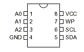
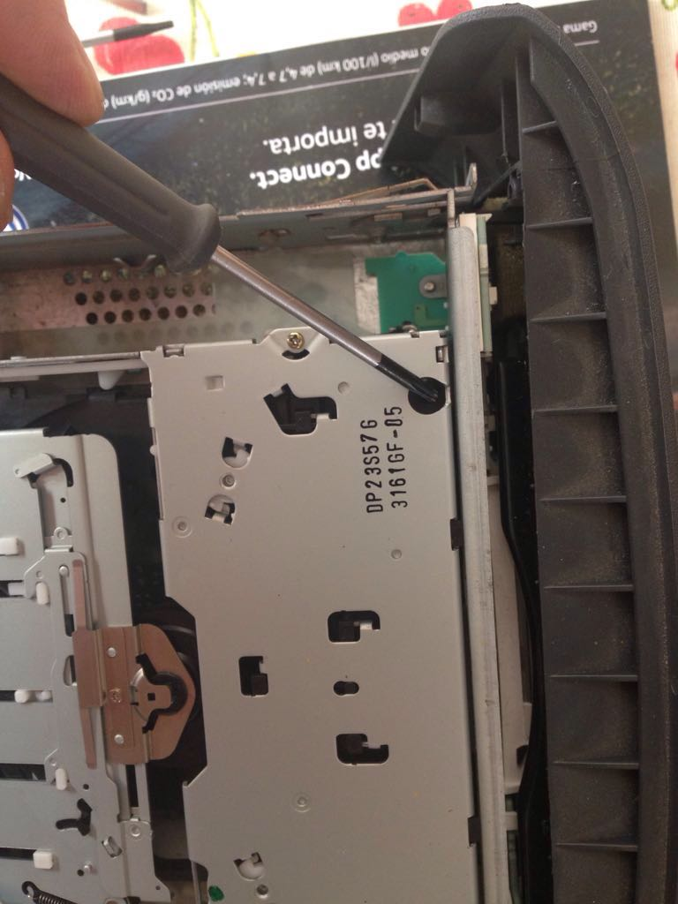

Recuperación del pin del Radio CD
Contents
Recuperación del pin del Radio CD#
(by Josep)
El único objetivo de este tutorial es permitir a propietarios legítimos recuperar su código de seguridad, en el caso de que hayan perdido la tarjeta proporcionada por el fabricante en el momento de la compra.
El Smart Roadster viene de serie con el equipo Grundig radio CD MRR.
{kind=link}
La radio almacena el código de seguridad (PIN) en una memoria EEPROM 24C08 con bus I2C. Para conseguir el PIN lo primero es leer el contenido de dicha memoria y después decodificarlo.
Lector RS232#
Esta memoria se puede leer con un sencillo circuito que se conecta directamente a sus patas por un lado y al puerto serie de un PC por el otro.
{kind=link}
El pinout del chip de memoria es el siguiente:
{kind=link}
El cable montado queda así:
{kind=link}
Otro montaje utilizando placa de prototipos:
{kind=link}
Los componentes necesarios son:
Conector DB9
2 resistencias 4K7
2 diodos zener de 5V1, 400 mW
Un trozo de cable. El típico de audio de 2 cables más malla puede servir.
El cable de la foto está montado directamente soldando los componentes y aislándolos con termoretractil.
Por tanto, tenemos el conector DB9 en un extremo y tres cables que corresponden con SCL, SDA y GND en el otro extremo. Los cables que corresponden a SCL y SDA deberían ser muy finos pues se deben soldar directamente a las patitas de la memoria (que es de tipo SMD). El tercero (la malla) se suelda a masa.
Desmontando la radio#
Hay que sacar la tapa superior, que no lleva tornillos. Sale levantando de las esquinas:
{kind=link}
{kind=link}
{kind=link}
Cuidado con las pestañas del frontal, hay que levantar completamente la tapa para sacarla sin romperlas:
{kind=link}
{kind=link}
{kind=link}
Está montados con tornillos TORX T9:
{kind=link}

Levantando por el lado derecho visto desde atrás, veremos en el otro lado el cable plano que lo conecta:
{kind=link}
Empujando las pestañas de cada lado se abre el bloqueo del conector y se puede sacar el cable:
{kind=link}
{kind=link}
{kind=link}
{kind=link}
{kind=link}
{kind=link}
O lo mismo, pero con pinzas, para no tener que soldar:
{kind=link}
{kind=link}
Lectura de la memoria#
Conecta el cable al puerto serie del PC.
Arranca el PC
Ejecuta PonyProg V117h y selecciona el tipo de memoria 24C08.
La siguiente operación debe ser muy rápida.
Alimenta la radio, y en cuanto se ilumine la pantalla LCD
Pulsa el botón de lectura en el PonyProg, y en cuanto la lea.
Inmediatamente quita la alimentación de la radio.
{kind=link}
Arrancamos el Grundig WKC Series Code Calculator 4.00, que se puede encontrar en: http://data.autorepairmanuals.ws/18b7ae227cb984888ecced1a26270a85 Cuidado con los virus!
{kind=link}
Elige el modelo “Challenge 600 CD” y escribe los datos en hexadecimal que aparecen a partir de la dirección 000010. En el caso de la lectura anterior son: b0 8e 84 9c bf 18. Después pulsa “Repair My Dump” y el programa mostrará el PIN una vez descifrado.
{kind=link}
Por si quieres comprobar que funciona correctamente, otra secuencia válida es:
2b 5b 1f 49 24 32 que corresponde al PIN 6540.